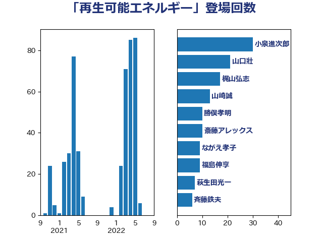

単語「再生可能エネルギー」

| 小泉進次郎 | 自由民主党 | 30 回 |
| 山口壯 | 自由民主党 | 21 回 |
| 梶山弘志 | 自由民主党 | 17 回 |
| 山崎誠 | 立憲民主党 | 13 回 |
| 勝俣孝明 | 自由民主党 | 10 回 |
| 斎藤アレックス | 国民民主党 | 10 回 |
| ながえ孝子 | 無所属 | 9 回 |
| 福島伸享 | 無所属 | 9 回 |
| 萩生田光一 | 自由民主党 | 7 回 |
| 斉藤鉄夫 | 公明党 | 6 回 |
| 須藤元気 | 無所属 | 6 回 |
| 佐藤英道 | 公明党 | 5 回 |
| 徳永エリ | 立憲民主党 | 5 回 |
| 源馬謙太郎 | 立憲民主党 | 5 回 |
| 福田昭夫 | 立憲民主党 | 5 回 |
| 青柳仁士 | 日本維新の会 | 5 回 |
| 寺田静 | 無所属 | 4 回 |
| 岩渕友 | 日本共産党 | 4 回 |
| 河野義博 | 公明党 | 4 回 |
| 田名部匡代 | 立憲民主党 | 4 回 |
| 若松謙維 | 公明党 | 4 回 |
| 中島克仁 | 立憲民主党 | 3 回 |
| 小宮山泰子 | 立憲民主党 | 3 回 |
| 小沼巧 | 立憲民主党 | 3 回 |
| 小野泰輔 | 日本維新の会 | 3 回 |
| 山下芳生 | 日本共産党 | 3 回 |
| 岸田文雄 | 自由民主党 | 3 回 |
| 末次精一 | 立憲民主党 | 3 回 |
| 神津たけし | 立憲民主党 | 3 回 |
| 秋本真利 | 自由民主党 | 3 回 |
| 竹谷とし子 | 公明党 | 3 回 |
| 鈴木義弘 | 国民民主党 | 3 回 |
| 青木愛 | 立憲民主党 | 3 回 |
| 下野六太 | 公明党 | 2 回 |
| 伊藤岳 | 日本共産党 | 2 回 |
| 大家敏志 | 自由民主党 | 2 回 |
| 大島敦 | 立憲民主党 | 2 回 |
| 宮内秀樹 | 自由民主党 | 2 回 |
| 宮口治子 | 立憲民主党 | 2 回 |
| 市村浩一郎 | 日本維新の会 | 2 回 |
| 杉久武 | 公明党 | 2 回 |
| 林芳正 | 自由民主党 | 2 回 |
| 櫛渕万里 | れいわ新選組 | 2 回 |
| 渡辺猛之 | 自由民主党 | 2 回 |
| 田嶋要 | 立憲民主党 | 2 回 |
| 田村智子 | 日本共産党 | 2 回 |
| 田村貴昭 | 日本共産党 | 2 回 |
| 細田健一 | 自由民主党 | 2 回 |
| 美延映夫 | 日本維新の会 | 2 回 |
| 落合貴之 | 立憲民主党 | 2 回 |
| 西銘恒三郎 | 自由民主党 | 2 回 |
| 野田国義 | 立憲民主党 | 2 回 |
| 阿部知子 | 立憲民主党 | 2 回 |
| 高橋はるみ | 自由民主党 | 2 回 |
| 上杉謙太郎 | 自由民主党 | 1 回 |
| 中根一幸 | 自由民主党 | 1 回 |
| 井上信治 | 自由民主党 | 1 回 |
| 井上哲士 | 日本共産党 | 1 回 |
| 今枝宗一郎 | 自由民主党 | 1 回 |
| 佐藤啓 | 自由民主党 | 1 回 |
| 勝部賢志 | 立憲民主党 | 1 回 |
| 和田有一朗 | 日本維新の会 | 1 回 |
| 城井崇 | 立憲民主党 | 1 回 |
| 塩村あやか | 立憲民主党 | 1 回 |
| 宗清皇一 | 自由民主党 | 1 回 |
| 室井邦彦 | 日本維新の会 | 1 回 |
| 小熊慎司 | 立憲民主党 | 1 回 |
| 山際大志郎 | 自由民主党 | 1 回 |
| 岡本三成 | 公明党 | 1 回 |
| 岡田克也 | 立憲民主党 | 1 回 |
| 岩田和親 | 自由民主党 | 1 回 |
| 工藤彰三 | 自由民主党 | 1 回 |
| 平山佐知子 | 無所属 | 1 回 |
| 杉尾秀哉 | 立憲民主党 | 1 回 |
| 松木けんこう | 立憲民主党 | 1 回 |
| 森本真治 | 立憲民主党 | 1 回 |
| 江島潔 | 自由民主党 | 1 回 |
| 泉健太 | 立憲民主党 | 1 回 |
| 浜野喜史 | 国民民主党 | 1 回 |
| 熊野正士 | 公明党 | 1 回 |
| 矢倉克夫 | 公明党 | 1 回 |
| 石井正弘 | 自由民主党 | 1 回 |
| 石川昭政 | 自由民主党 | 1 回 |
| 礒崎哲史 | 国民民主党 | 1 回 |
| 笠井亮 | 日本共産党 | 1 回 |
| 笹川博義 | 自由民主党 | 1 回 |
| 舟山康江 | 国民民主党 | 1 回 |
| 芳賀道也 | 国民民主党 | 1 回 |
| 菅義偉 | 自由民主党 | 1 回 |
| 蓮舫 | 立憲民主党 | 1 回 |
| 藤井比早之 | 自由民主党 | 1 回 |
| 角田秀穂 | 公明党 | 1 回 |
| 谷合正明 | 公明党 | 1 回 |
| 赤羽一嘉 | 公明党 | 1 回 |
| 逢坂誠二 | 立憲民主党 | 1 回 |
| 野上浩太郎 | 自由民主党 | 1 回 |
| 金子恵美 | 立憲民主党 | 1 回 |
| 鈴木俊一 | 自由民主党 | 1 回 |
| 関芳弘 | 自由民主党 | 1 回 |
| 青山繁晴 | 自由民主党 | 1 回 |
| 額賀福志郎 | 自由民主党 | 1 回 |
| 高橋千鶴子 | 日本共産党 | 1 回 |
| 齋藤健 | 自由民主党 | 1 回 |